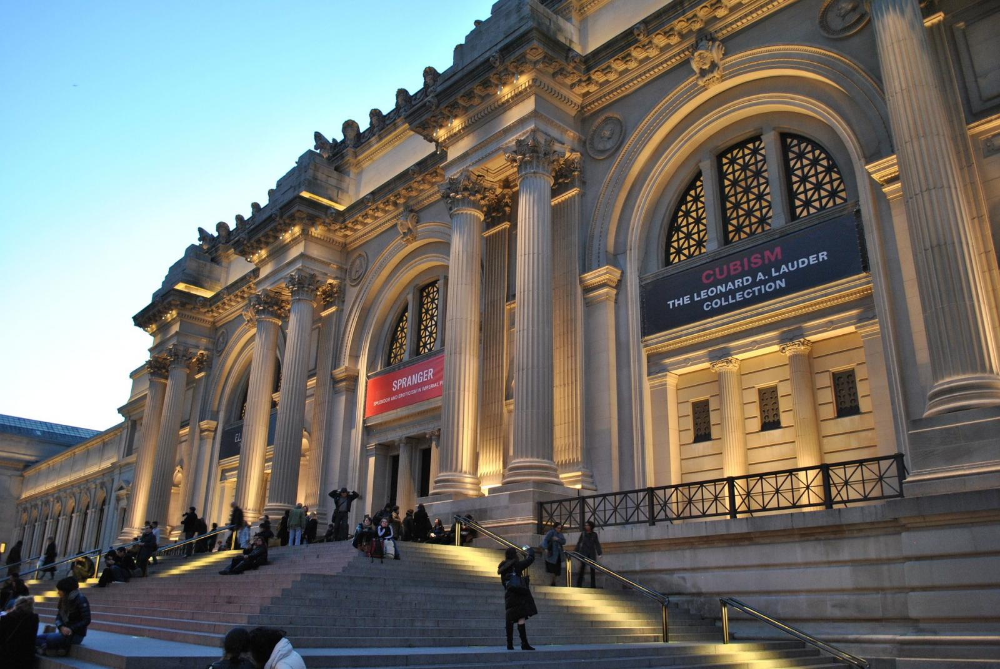
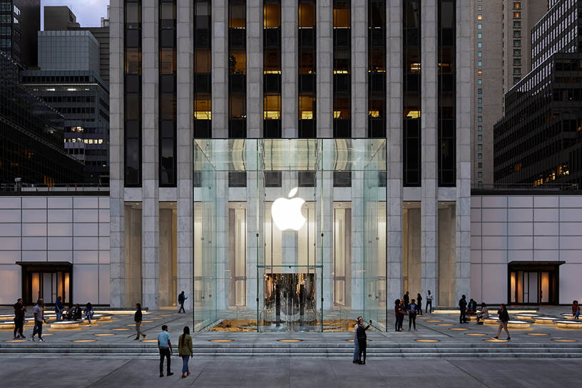
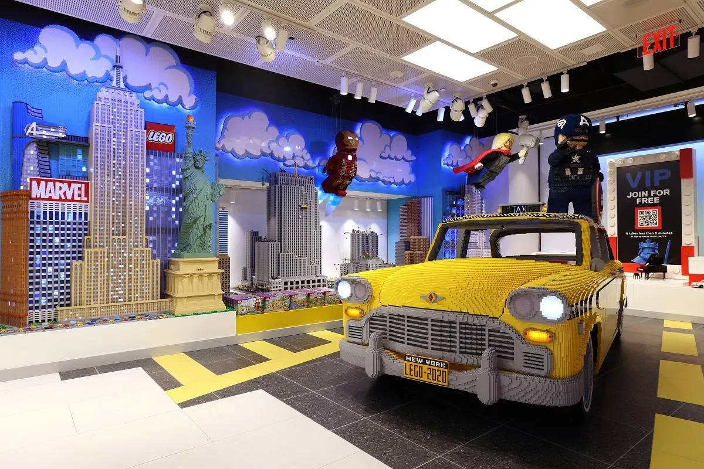
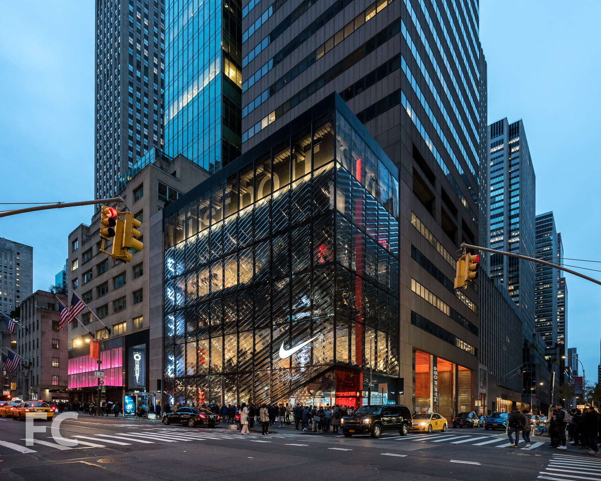
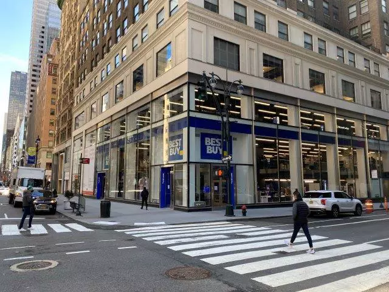
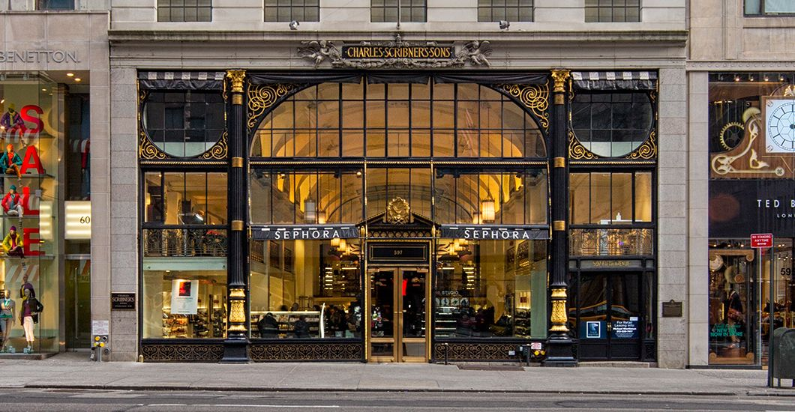
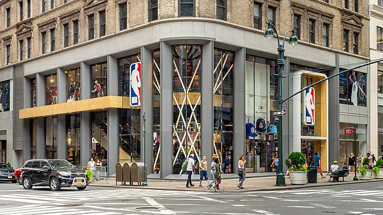
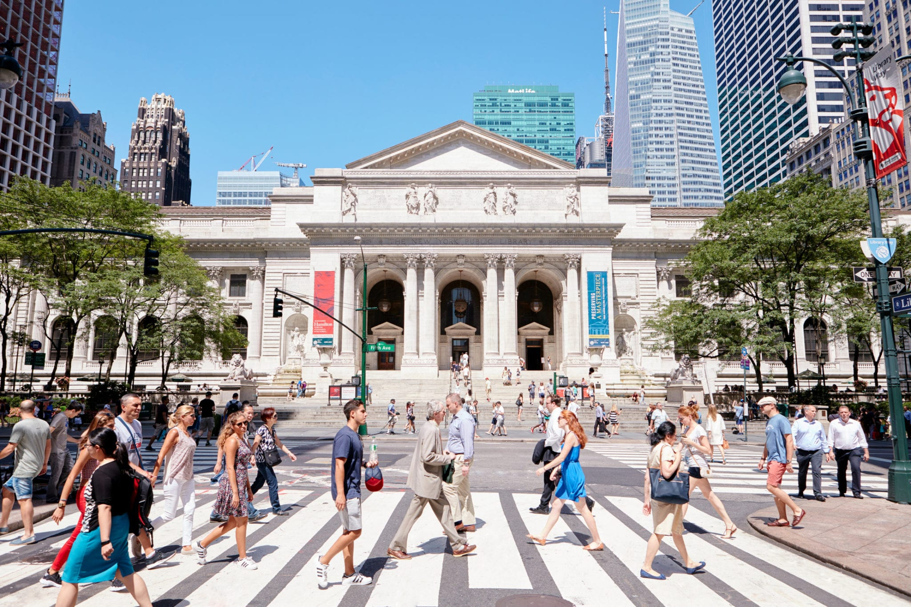
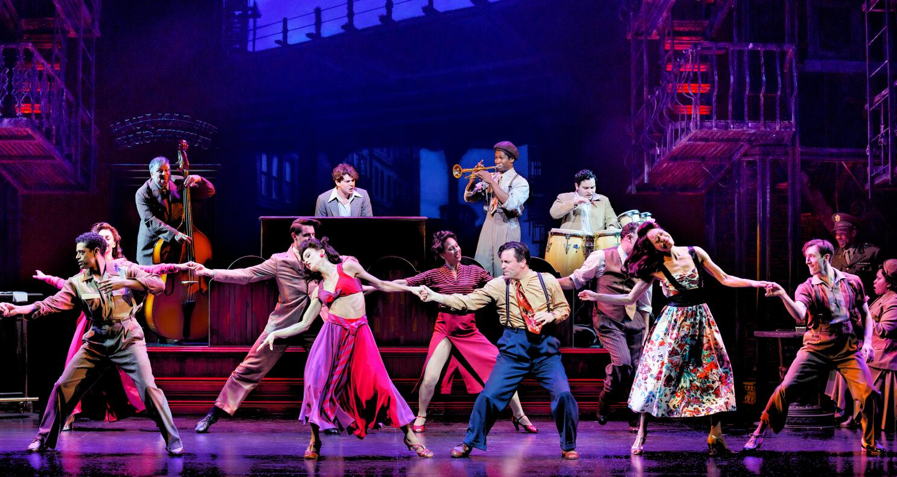
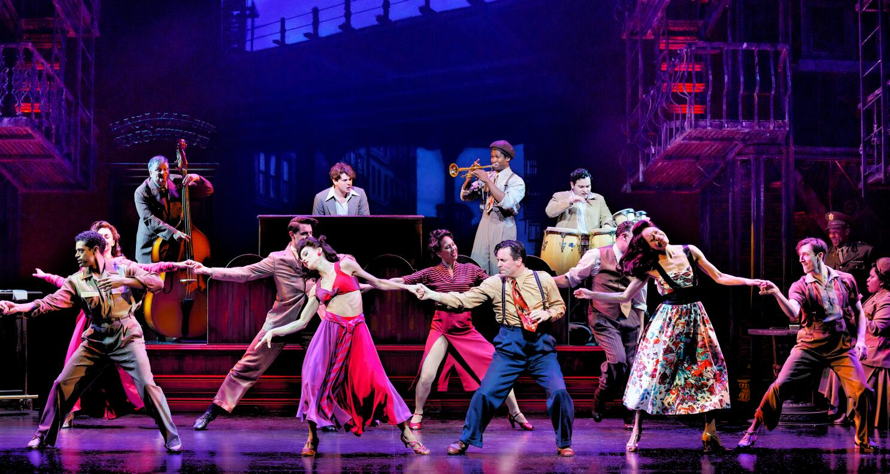

O dia amanheceu nublado, mas sem chuva. Levantei da cama para escovar dente e você continuou dormindo. Quando voltei pra cama, me deitei te abraçando por trás e você acordou. Comecei com minhas safadezas e você mesmo sonolenta, respondia rapidamente. Quando o clima esquentou, você foi escovar dente e voltou deitando por cima de mim, rebolando enquanto me beijava. Não perdi tempo e já tirei seu short de pijama. Pedi pra que ficasse em pé e eu comecei a te masturbar de encontro com a parede, enquanto eu beijava seu pescoço, assim como a gente fazia nas ruas de Paracatu quando nos conhecemos. Você tremia e gemia, arranhando minhas costas. O fim foi rápido, você igual uma cachoeira gozou no meu dedo.
Capítulo 2
Peguei uma camisinha e, assim que coloquei, te coloquei na borda da cama, de costas pra mim. Botei meu pau lentamente e você soltou um gemidão. Fui aumentando o ritmo, comecei a te dar tapas, a puxar seu ombro pra trás, a puxar sua cintura. Sua bunda balançando com o impacto da minha cintura, meu pau sambando dentro de você. Você se jogou completamente em cima da cama, como quem perde as forças na perna e eu terminei de te comer daquele jeito mesmo. Foram poucos segundos a mais desse jeito e eu gozei.
Depois de uns beijinhos, imediatamente fomos tomar banho na ducha. O tablet alegava ser 7:50, então fomos despertar no chuveiro pra arrumar e depois ir tomar o buffet de café do hotel, que estávamos ansiosos pra experimentar. Vesti uma roupa light, mas deixei prontamente arrumada um conjunto para sair nas ruas de Manhattan novamente, você fazendo o mesmo. Descemos e fomos pra o restaurante.
No café da manhã do Park Hyatt, a experiência é refinada e prazerosa. O buffet é cuidadosamente disposto, oferecendo uma variedade de opções, desde frutas frescas até croissants e pães artesanais. Os chefs preparam omeletes personalizados, e a mesa de sobremesas apresenta doces finos. A atenção aos detalhes é evidente na apresentação impecável e na qualidade dos ingredientes. Este café da manhã vai além da refeição, tornando-se uma experiência gastronômica única no ambiente elegante e com o serviço de alta qualidade característicos do Park Hyatt.

Ao retornarmos ao quarto, tomados pela empolgação das descobertas vindouras, dedicamo-nos a arrumar nossas coisas, preparando-nos para um dia repleto de novas experiências. Com a energia renovada, partimos para o Metropolitan Museum of Art. Saímos pelas ruas, passando pelo Central Park novamente, porém dessa vez pelo outro lado. Alguns minutos depois, chegamos ao MET. Ao adentrar as majestosas portas do museu, fomos imersos em um mundo de beleza artística e cultura. Navegamos pelos corredores repletos de obras-primas, desde antiguidades egípcias até pinturas renascentistas e esculturas contemporâneas. Cada sala revelava uma nova faceta da história e da expressão humana, proporcionando-nos uma jornada fascinante através dos séculos. O Central Hall, com seu teto abobadado e escadaria imponente, ofereceu uma visão magnífica do grandioso museu. Entre contemplações silenciosas e conversas entusiasmadas, absorvemos a diversidade artística que o MET oferece.
Saindo do esplêndido Metropolitan Museum of Art, decidimos explorar um lado mais lúdico da cidade - a 5th Avenue, direcionando nossos passos em direção à Apple Store localizada nas ruas abaixo do Central Park. Pegamos um táxi para agilizar o trajeto e pudemos ver o contraste do Museu com a agitação da cidade.

A loja era linda. O vidro e a tecnologia fez a gente tirar muita foto. Olhamos alguns eletrônicos e você acabou se interessando pelo iPad, que comprou. Eu levei um Macbook pra mim.
Depois, fomos para a Lego Store. Antes de chegarmos, olhamos pra frente e do outro lado da rua tinha uma loja da Nike e da Victoria's Secret. Você quis logo visitá-las e assim fizemos. Começamos pela Victoria, fomos recebidos por uma atmosfera sofisticada, onde a lingerie exibia um equilíbrio entre elegância e sensualidade. As prateleiras apresentavam uma variedade deslumbrante de conjuntos, cada peça uma celebração da feminilidade. Os aromas suaves e a iluminação envolvente contribuíram para uma atmosfera indulgente. Você selecionou alguns conjuntos que perguntou qual eu gostava mais e foi experimentar alguns. Saiu com um preferido e disse que eu ia gostar. Fomos pagar e saímos para a Nike. Desde as últimas coleções de calçados de corrida até os mais recentes avanços em tecnologia esportiva, lá tinha de tudo. Pegamos algumas roupas e fomos experimentar. Olhei também alguns tênis, e encontrei um tênis de corrida por um preço ótimo. Acabei levando somente o tênis, para poupar a mala. Você levou um conjunto de roupas para academia.


Saímos e fomos pra loja do Lego. Já nos deparamos com as construções de blocos de Lego caríssimas, como prédios e navios muito legais. Lá tinha de tudo, até mesmo um táxi em tamanho quase real e aquela seção de peças Lego pra montar mecanismos. Não compramos nada, mas pudemos ver diversos brinquedos legais.
Logo depois atravessamos a rua com destino a Catedral de Saint Patrick, enorme e belíssima. Não entramos pois não estava aberta a visitações, apenas tiramos fotos na frente. Os vitrais e as torres pontiagudas eram muito charmosas e únicas. Contraste absurdo com os arredores modernos de Nova York.
Assim seguimos descendo a avenida para lojas como Nintendo - onde me diverti olhando jogos e as novas tecnologias da Nintendo, Sephora - onde você mergulhou no mundo de cosméticos olhando algumas bases e produtos de pele (demorando por sinal), Adidas Flagship, NBA Store - onde entrei e olhei camisas e outras coisas, Best Buy. Essa última foi onde mais me diverti. Olhei de tudo, celulares, eletrônicos, periféricos, hardware, acessórios. Lá tinha tudo. Meu sonho é ter uma loja dessa no Brasil.



Continuamos para a Zara, olhamos algumas roupas por lá, você até chegou a experimentar mas não levou nada. No final do nosso trajeto na 5th Avenue, chegamos na Biblioteca Pública. Novamente uma estrutura imponente. Bela por fora e igualmente por dentro. Era enorme. Olhamos o que pudemos, ficamos lá um tempo, aproveitando o clima calmo que combinava com o dia nublado. Olhamos também a livraria que ficava lá e compramos alguns exemplares clássicos.

Já havia passado da hora do almoço, a gente tinha se perdido no tempo olhando lojas e comendo algumas coisas da rua. Então, resolvemos ir a uma sanduicheria bastante conhecida por lá, a Shake Shack. No trajeto, passamos em frente ao Empire State e tiramos diversas fotos de baixo pra cima, evidenciando o tamanho dessa construção. Chegamos enfim ao Shake Shack. O ambiente era aconchegante e o lanche chegou rápido. Comemos e bebemos tranquilamente, sabendo que eram duas da tarde e ainda tinhamos mais planos por ali.
Esse restaurante fica no sentido oposto à Times Square, então passamos a tarde percorrendo ela no sentido contrário. Passamos por lojas, por lanchonetes e docerias, a dizer a Hersheys e MM. Compramos alguns chocolates só pelo sentimento lúdico de visitar essas lojas. A gente passou também pela Broadway, visitamos alguns teatros por fora, tiramos fotos e nos divertimos com os funcionários. Mas conseguimos chegar a tempo de um musical que ia rolar e pegamos uns dos últimos ingressos pra o evento. Você realizou seu sonho de ver um desses musicais ao vivo.
 

A gente estava muito cansado e estava tarde, então resolvemos voltar pra o hotel. Como não queríamos sair naquele dia novamente, pedimos um jantar de um prato pra cada no serviço do hotel. Enquanto esperávamos, você foi pra banheira e eu tomei um banho de chuveiro. Deitei na cama e fiquei assistindo TV, estava passando NBA, enquanto nem você nem o jantar chegavam. Alguns minutos depois, você se arrumou e vestiu o pijama. Mais outros minutos, a comida chegou. Fomos pra mesa e o prato estava chique. Um prato do meu gosto me agradou muito, então comemos satisfeitos. Fomos deitar na cama e você foi ver vídeos com o fone, e eu continuei com a NBA, casualmente assistindo coisas no celular nos intervalos.
Depois de um tempo, a gente conversava sobre os planos do dia seguinte, dos museus, lugares e atrações que iríamos visitar. Papo vai e papo vem, eu te dei um beijão e, naquele ponto, já era um gatilho imediato pra você. O beijo durou muito mais que o previsto e já subiu o calor na pele. Você foi no banheiro e voltou deslumbrante.
Vestiu o conjunto que comprou mais cedo. Estava uma delícia. Sentou no meu colo enquanto eu estava encostado na cabeceira da cama, rebolava e me beijava ao mesmo tempo. Chegou a minha hora de tirar minha roupa. Fiquei de cueca e você achou um ponto que estimulava completamente seu clitóris, o que te fez ficar nesse movimento por alguns segundos até que de repente gozou, isso com o conjunto e minha cueca entre nós. Te deitei no papai e mamãe e já comecei a penetração. Fiquei nesse movimento alguns poucos minutos até que te perguntei se poderia te chupar. Você concordou, então eu fui de prontidão para a beirada da cama. Você entendeu o recado e ficou na posição ideal pra mim.
Comecei a escorregar com os lábios pela sua perna e, chegando na região, segurei sua cintura e chupei com tudo. Você arrepiou inteira, rebolava na minha cara enquanto eu chupava sua buceta e gritava pra mim: Vai, não para agora. Chupa sua mulher. Continuei assim. Quando comecei a me cansar, usei a mão pra me auxiliar e você enlouqueceu. Se contorcia toda e me apertava com as coxas. Quando você travou num gemido alto final eu sabia que poderia parar. Esperei você recuperar por uns segundinhos, mas não perdi tempo.
Nessa posição mesmo eu já coloquei meu pau todo em você. Segurei sua cintura e te meti na borda da cama, até que eu ajoelhei em cima dela e continuei. Seus peitos balançavam na medida que meu pau arrebentava sua buceta. Tudo que eu sentia era vontade de ser um com você e quem sofria nesse caso era você. Sofria de um jeito bom com minha maldade e vontade. Demorei um pouco pra conseguir chegar no climax, trocamos algumas posições pra experimentar coisas novas, coloquei camisinha. Na última, eu ficava entre suas pernas com você deitada (segunda imagem a seguir) e foi nessa que eu dei tudo de mim, pouco tempo de sexo e eu gozei na camisinha.
Fui me limpar e você também, dizendo que te arrebentei. Ficou no banheiro resfriando igual sempre faz enquanto eu arrumava nossa bagunça. Ajeitei a cama pra dormir e você chegou. Deitamos de concha e, enquanto eu fazia carinho em você, você dormiu. Continuei por uns minutos e depois me aconcheguei na coberta. Cai no sono poucos minutos depois, só acordando com o despertador do dia seguinte.